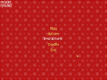

Tutorial 06 - Creating menus
This tutorial shows how to create custom GUI controls and menus.

Creating custom controls
First, we should define the custom control class, derived from hgeGUIObject:
class hgeGUIMenuItem : public hgeGUIObject
{
public:
hgeGUIMenuItem(int id, hgeFont *fnt, HEFFECT snd,
float x, float y, float delay, char *title);
virtual void Render();
virtual void Update(float dt);
virtual void Enter();
virtual void Leave();
virtual bool IsDone();
virtual void Focus(bool bFocused);
virtual void MouseOver(bool bOver);
virtual bool MouseLButton(bool bDown);
virtual bool KeyClick(int key, int chr);
private:
hgeFont *fnt;
HEFFECT snd;
float delay;
char *title;
hgeColor scolor, dcolor, scolor2, dcolor2, color;
hgeColor sshadow, dshadow, shadow;
float soffset, doffset, offset;
float timer, timer2;
};
The custom control constructor should initialize hgeGUIObject data members
id, bStatic, bVisible, bEnabled and rect:
hgeGUIMenuItem::hgeGUIMenuItem(int _id, hgeFont *_fnt,
HEFFECT _snd, float _x, float _y,
float _delay, char *_title)
{
id=_id;
fnt=_fnt;
snd=_snd;
delay=_delay;
title=_title;
color.SetHWColor(0xFFFFE060);
shadow.SetHWColor(0x30000000);
offset=0.0f; timer=-1.0f; timer2=-1.0f;
bStatic=false; bVisible=true; bEnabled=true;
float w=fnt->GetStringWidth(title);
rect.Set(_x-w/2, _y, _x+w/2, _y+fnt->GetHeight());
}
Render method is essential, every control must define it:
void hgeGUIMenuItem::Render()
{
fnt->SetColor(shadow.GetHWColor());
fnt->Render(rect.x1+offset+3, rect.y1+3, HGETEXT_LEFT, title);
fnt->SetColor(color.GetHWColor());
fnt->Render(rect.x1-offset, rect.y1-offset, HGETEXT_LEFT, title);
}
All other methods are optional and you could not define them if you don't need.
Update is called each time the GUI is updated
and should do the animation. In this example we have two timers and adjust the
control's color and position with time:
void hgeGUIMenuItem::Update(float dt)
{
if(timer2 != -1.0f)
{
timer2+=dt;
if(timer2 >= delay+0.1f)
{
color=scolor2+dcolor2;
shadow=sshadow+dshadow;
offset=0.0f;
timer2=-1.0f;
}
else
{
if(timer2 < delay) { color=scolor2; shadow=sshadow; }
else {
color=scolor2+dcolor2*(timer2-delay)*10;
shadow=sshadow+dshadow*(timer2-delay)*10;
}
}
}
else if(timer != -1.0f)
{
timer+=dt;
if(timer >= 0.2f)
{
color=scolor+dcolor;
offset=soffset+doffset;
timer=-1.0f;
}
else
{
color=scolor+dcolor*timer*5;
offset=soffset+doffset*timer*5;
}
}
}
Enter is called when the GUI is about to appear
on the screen. A control should start it's Enter animation here:
void hgeGUIMenuItem::Enter()
{
hgeColor tcolor2;
scolor2.SetHWColor(0x00FFE060);
tcolor2.SetHWColor(0xFFFFE060);
dcolor2=tcolor2-scolor2;
sshadow.SetHWColor(0x00000000);
tcolor2.SetHWColor(0x30000000);
dshadow=tcolor2-sshadow;
timer2=0.0f;
}
Leave is called when the GUI is about to disappear
from the screen. A control should start it's Leave animation here:
void hgeGUIMenuItem::Leave()
{
hgeColor tcolor2;
scolor2.SetHWColor(0xFFFFE060);
tcolor2.SetHWColor(0x00FFE060);
dcolor2=tcolor2-scolor2;
sshadow.SetHWColor(0x30000000);
tcolor2.SetHWColor(0x00000000);
dshadow=tcolor2-sshadow;
timer2=0.0f;
}
IsDone is used to test if the control has finished
it's Enter/Leave animation. When the animation is finished it should return true:
bool hgeGUIMenuItem::IsDone()
{
if(timer2==-1.0f) return true;
else return false;
}
Focus method is called when the control
gains or loses keyboard input focus. In this example we start our focus
animation here:
void hgeGUIMenuItem::Focus(bool bFocused)
{
hgeColor tcolor;
if(bFocused)
{
hge->Effect_Play(snd);
scolor.SetHWColor(0xFFFFE060);
tcolor.SetHWColor(0xFFFFFFFF);
soffset=0;
doffset=4;
}
else
{
scolor.SetHWColor(0xFFFFFFFF);
tcolor.SetHWColor(0xFFFFE060);
soffset=4;
doffset=-4;
}
dcolor=tcolor-scolor;
timer=0.0f;
}
MouseOver method is called to notify the
control that the mouse cursor has entered or left it's area. Here we just set
the input focus to our control when the mouse comes over it:
void hgeGUIMenuItem::MouseOver(bool bOver)
{
if(bOver) gui->SetFocus(id);
}
MouseLButton method is called to notify the
control that the left mouse button state has changed. If the control changes it's state
and wants the caller to be notified, it should return true:
bool hgeGUIMenuItem::MouseLButton(bool bDown)
{
if(!bDown)
{
offset=4;
return true;
}
else
{
hge->Effect_Play(snd);
offset=0;
return false;
}
}
KeyClick method is called to notify the
control that a key has been clicked. If the control changes it's state
and wants the caller to be notified, it should return true:
bool hgeGUIMenuItem::KeyClick(int key, int chr)
{
if(key==HGEK_ENTER || key==HGEK_SPACE)
{
MouseLButton(true);
return MouseLButton(false);
}
return false;
}
Well, we have our custom control behaviour defined now.
Using GUI
Here's the simple part. First, we'll need some resource handles:
HEFFECT snd;
HTEXTURE tex;
hgeGUI *gui;
hgeFont *fnt;
hgeSprite *spr;
In the WinMain function, during initialization
we should load the required resources:
snd=hge->Effect_Load("menu.wav");
tex=hge->Texture_Load("cursor.png");
fnt=new hgeFont("font1.fnt");
spr=new hgeSprite(tex,0,0,32,32);
Now we can create the GUI and add our menu items to it. GUI controls
are managed internally and you could not hold the pointers:
gui=new hgeGUI();
gui->AddCtrl(new hgeGUIMenuItem(
1,fnt,snd,400,200,0.0f,"Play"));
gui->AddCtrl(new hgeGUIMenuItem(
2,fnt,snd,400,240,0.1f,"Options"));
gui->AddCtrl(new hgeGUIMenuItem(
3,fnt,snd,400,280,0.2f,"Instructions"));
gui->AddCtrl(new hgeGUIMenuItem(
4,fnt,snd,400,320,0.3f,"Credits"));
gui->AddCtrl(new hgeGUIMenuItem(
5,fnt,snd,400,360,0.4f,"Exit"));
Now we set the GUI navigation mode, mouse cursor image and the default
input focus, then we start the Enter animation:
gui->SetNavMode(HGEGUI_UPDOWN | HGEGUI_CYCLED);
gui->SetCursor(spr);
gui->SetFocus(1);
gui->Enter();
Now let's see how we update our menu and receive notifications.
In our frame function (FrameFunc) we call hgeGUI::Update method
to update the animation and process user's input. If a control has changed it's state, this method
returns the control identificator. If all the controls have finished their Leave animation, it returns -1.
If nothing interesting happened, it returns 0.
int id;
static int lastid=0;
float dt=hge->Timer_GetDelta();
id=gui->Update(dt);
if(id == -1)
{
switch(lastid)
{
case 1:
case 2:
case 3:
case 4:
gui->SetFocus(1);
gui->Enter();
break;
case 5: return true;
}
}
else if(id) { lastid=id; gui->Leave(); }
To render the menu we just call hgeGUI::Render method
within our RenderFunc:
hge->Gfx_BeginScene();
gui->Render();
hge->Gfx_EndScene();
So, the menu is up and running. Now back to the WinMain.
During shutdown we should delete the GUI and free the resources:
delete gui;
delete fnt;
delete spr;
hge->Texture_Free(tex);
hge->Effect_Free(snd);
The complete source code with detailed comments for this tutorial you may find in the folder
tutorials\tutorial06. The required media files you'll find in the folder tutorials\precompiled.
|